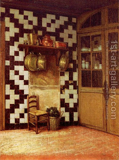

Bava Metzia 111 - Prohibition Again Delaying Payment to an Employee
Whether it be the hire of a man, the hire of an animal, or the hire of a utensil - that is, the wages due a man for his labor, or the payment due him for renting his animals or utensils, one is subject to both prohibitions against delaying a payment .
When is this so? When the worker demanded his wage from the employer. But if the worker did not demand his wages from the employer, the employer does not transgress the law. If the employer directed him to a storekeeper or a moneychanger (by arranging an account with them) but the worker was not paid, the employer does not transgress the law.